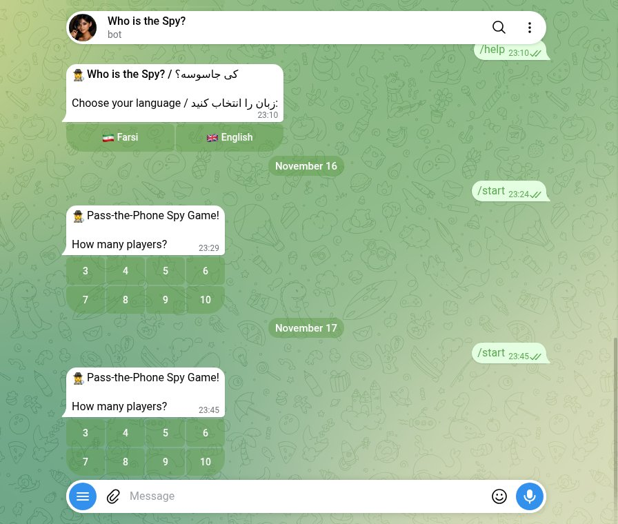
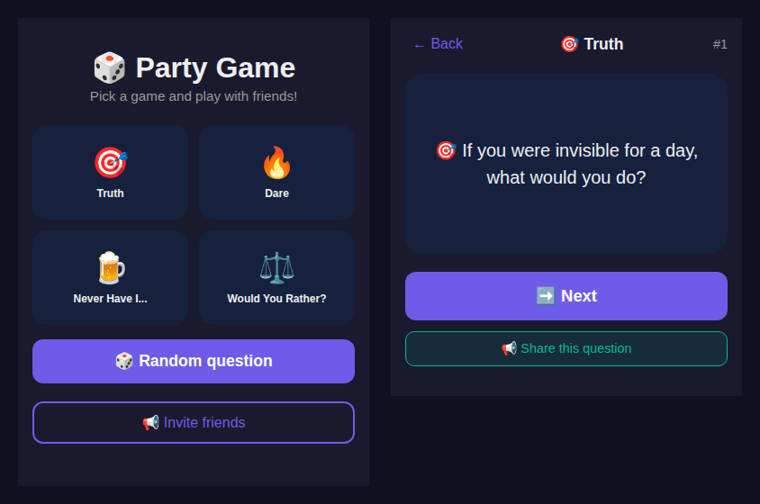

Best Telegram Party Games & Bots in 2026: 77 Messaged, 5 Play in a Private Chat
Telegram isn't just for messaging anymore. With the Mini Apps platform, it's become a legitimate place for group entertainment. Whether you're at a party, on a video call, or just killing time in a group chat, a party game turns any conversation into an instant game night.
I've been running a Telegram party game of my own since March 2026, and this update is mostly about something I got wrong. The original version of this article told you to add a bot to your group and type /play. That advice has quietly stopped working — not just for my bot, but as a general pattern. Below is what changed, why it matters when you're picking a game, and what actually works now. In November 2026 I also messaged 77 party game bots and sent each one its own game command. Which ones play in a private chat and which want a group is two sections down.
The thing nobody tells you about game bots
There are two completely different things people call "a Telegram game", and they fail in different ways.
A chat bot listens for commands. You add it to a group, type /play, and it replies with a question and some buttons. That reply comes from a server the operator is paying for and maintaining somewhere. Telegram is only the delivery pipe — the bot itself is a program someone else has to keep running, receiving updates and answering them.
A Mini App is a web page. Telegram opens it in an in-app browser and hands it a bit of context about you. Telegram's own documentation is blunt about the ambition here: with Mini Apps, developers "can use JavaScript to create infinitely flexible interfaces that can be launched right inside Telegram — and can completely replace any website". If the game logic and the questions ship inside that page, it needs no server at all once it's loaded.
Here's the practical consequence, and it's the reason I rewrote this article: when an operator stops paying for the backend, every chat-bot game dies silently. No error, no "this bot is gone" message. You type /play into a group and nothing happens at all. Meanwhile a static Mini App from the same operator keeps working indefinitely, because there's nothing left to switch off.
This happened to my own bot. I shut down the chat-command backend in May 2026 after it saw almost no group usage, and left the Mini App running. For weeks the old instructions in this very article kept telling people to add the bot to a group and type /play — into silence. That's my fault, and it's fixed below.
It is also not rare. I later sent a real /start to all 18 game bots recommended across three currently-ranking "best Telegram games" articles, and seven of the eighteen never replied at all — including Hangman, 2048 and Snake. So before you trust any list, including this one, press Start and count to fifteen.
/start. If nothing comes back within a few seconds, the backend is down and no amount of group-adding will help. If the bot's profile shows a Launch or Open App button, that's a Mini App and it will usually work regardless.
Want to skip the checking? The Mini App I describe below is the one that survived my own shutdown — open it in Telegram, or play it in a browser. It's free, needs no install, and the full breakdown of what's in it is further down.
I messaged 77 Telegram party game bots in November 2026
The rest of this article is about formats. This part is about the bots, because most "best Telegram games" lists never say whether a bot still answers, or what it actually does when you message it. On 16 and 17 November 2026 I went back through every party game bot I had found in earlier tests and added the top results Telegram's own search gives for telegram games, games, party games, group games and игры.
- 90 bots found. 72 had answered in my September tests of single games (word games, spy games, Codenames, cards, board games, Never Have I Ever and Would You Rather), 6 came from a broader fun-bots test, 12 from Telegram search. Search was the weakest source: игры returned no bots at all, and the other four queries returned one to five each.
- 13 dropped before I sent anything, going by their own descriptions: 5 casino or crypto-earn bots (four were copies of the same referral scheme), 2 adult bots, 5 doing some other job (a photo feed, prank phone calls, a channel captcha, a Magic 8 Ball, a Premium giveaway) and a login helper for a website.
- 77 got one
/start. 64 replied within 10 seconds, 3 more within 15 minutes. 8 stayed silent, 2 usernames no longer exist. - 39 name a command that starts a game, in their
/startreply, their/helpor their command menu. Each of those got exactly that command in a private chat. I waited 60 seconds and pressed at most one of the bot's own Start or Join buttons. - The other 38 got nothing more. 9 name no game command at all. 11 are dead: the 8 silent ones, the 2 missing usernames, and one Never Have I Ever bot that Telegram has blocked for breaking its terms. 10 turned out not to be a public game (a private bot that says "access denied", a message saver that only matched the word "spy", a pointer to another bot). Telegram itself marks 5 as unable to join groups, 2 wanted a deposit, and 1 says in its own text that it is not for groups.
Out of the 39 that got a game command:
- 5 started a game right there in the private chat.
- 21 replied that the game only runs in a group. Seven of those are really two services: one Crocodile "host-bot" under four usernames, and one draw-the-word Crocodile under three, with word-for-word identical replies. So it is 16 distinct services.
- 1 needs at least two players before it does anything (@CodeNamesGBot: "at least 2 players needed").
- 2 open a Mini App instead of playing in chat (@Card_games1bot, @Durak_Bot). I didn't test those here.
- 6 did something else: a menu with no move in 60 seconds, an instructions link, a message my client couldn't display, and one spy bot that answered its own documented
/gamewith "I'm a bot, I don't understand you". - 4 said nothing within 60 seconds.
Five that play in a private chat right now
These are the ones to try if you are in one room with one phone, or just want to check that a game bot is alive before you invite anyone.
| Bot | Game | Send | What came back |
|---|---|---|---|
| @WhoIsSpyyBot | Spy, one phone | /start | "Pass-the-Phone Spy Game! How many players?" with buttons for 3 to 10. The first time it took more than four minutes to answer; the second time it was instant. |
| @RatherGameBot | Would You Rather | /next | Two options with 🔵 and 🔴 buttons: a small part in a really good movie, or a big part in a really bad one. |
| @pickle_picker_bot | Would You Rather | /random | One dilemma as text: fly the red-eye and go straight to work, or fly at noon and lose a day of the trip. |
| @english_words_game_bot | Guess the word | /play | A definition with the word masked as [o..], on a timer. Five minutes later: "Time's up! The word was: Old". |
| @samcrocodile_bot | Trivia quiz | /play | "Question 1/20" in Russian: which country is the largest producer of chocolate. A quiz, despite "crocodile" in the name. |

Two of the five are the same game, Would You Rather, and that fits the essay above: it is the format that needs the least from a bot. A spy game on one phone works because the bot only has to hand out secret words, and passing the phone around does the hiding.
21 that say "add me to a group"
Seven of the eight biggest bots in this test, by the monthly user count Telegram shows on a bot's profile, are in this table, and each of them says so in its first reply. The eighth is @Durak_Bot, a Mini App.
| Bot | Game | Send | Its own reply in a private chat |
|---|---|---|---|
| @Crocodile_Game_Bot, plus _Covid, _Game3 and _Game4 (same engine) | Crocodile: explain the word | /start | "I'm a host-bot for Crocodile game" and an "Add bot to chat" button. 127,252 monthly users on the main one. |
| @CrocoDraw_Bot, plus @CrocoZyabrBot and @DoodleGatorBot (same engine) | Crocodile: draw the word | /start | "Add me to your group, and I'll give you a word to draw." 78,275 monthly users on CrocoDraw. |
| @play_unobot | Uno | /new | "1. Add this bot to a group". 93,563 monthly users. |
| @unobot | Uno | /new | The same first step, plus a pointer to @uno9bot. 38,982 monthly users. |
| @on9wordchainbot | Word chain | /startclassic | "This command can only be used in groups". 15,488 monthly users. |
| @spyfalltg_bot | Spyfall | /spy | After one tap on its "how to start" button: played in a group, from 3 people, and the bot wants admin rights there. |
| @brekhlo_game_bot | Spy-style word game | /startgame | "/startgame can only be used in a group". Its /help says 3 to 14 players. |
| @imposter_word_bot | Imposter | /impostergame | "Please run this command in a group chat!" |
| @GameSpy2_bot | Spy | /game | "Use this command in a group chat" (in Russian). |
| @mafia_keysbot | Spy | /game | In Uzbek: this game is played in a group. Add me, type /game there, friends press Join. |
| @gamecodenamesbot | Codenames | /newgame | In Hebrew: add me to the group and send /newgame there. |
| @MeCodenamesBot | Codenames | /newgame | "Groups only" (in Russian). |
| @saldoran_blackjack_bot | Blackjack | /newgame | "Control commands work in a group" (in Russian). |
| @crocodileua_bot | Crocodile | /start | "Add me to a chat to start the game" (in Ukrainian). |
| @crocodil_ua_bot | Crocodile | /start | "Entertain your group with the Crocodile bot". 407 monthly users. |
| @GameWave_Bot | Collectible cards | /start | "Add the bot to your chats to play with friends and collect exclusive cards" (in Russian). |
A bot that answers /start with "add me to a group" is at least alive, which is more than a lot of list entries manage. It doesn't prove a round runs smoothly once it's in. For that part, a game bot can freeze mid-round when a busy group hits Telegram's per-chat limit, and privacy mode decides whether a bot sees plain messages or only commands and replies, which is why some of them ask for admin rights.
The rest
@Durak_Bot (35,576 monthly users) and @Card_games1bot open a web app when you press Play, so they belong with the Mini Apps, not the chat games. @checkerstgybot shows a menu with "vs bot", "with a friend" and "rated" but made no move in the minute I gave it. @Word_chain_robot asks you to pick nouns or cities first. @WordiBot says you play it in private chats with friends, through an inline share. @UnoWorldBot sends a link to its instructions. @RichChessBot replied with a message my Telegram client couldn't display. @Findthespybot documents /game and then doesn't understand it. @BlackJackBot, @codenames_ua_bot, @croco_ua_bot and @WiTSgameBot said nothing at all.
If you're in one room, start with @WhoIsSpyyBot or one of the two Would You Rather bots. For a group chat, the Crocodile and Uno engines have by far the most users. Whatever you pick, send /start in a private chat first and count to fifteen.
Why Telegram at all?
- Zero friction — everyone in the group already has it. No new app installs, no invite links to chase.
- Cross-platform by default — phone, tablet, desktop, web. The same game state follows the account.
- It's already where the group is — you don't have to talk five people into downloading something at a party. That is the entire ball game; most group apps die at this step.
- Mini Apps feel native — real interfaces, theme matching, haptics, instead of a wall of chat messages.
The three formats worth playing
1. Truth or Dare
The classic works well digitally, mostly because it removes the two things that kill it in person: running out of ideas, and the same person always inventing the dares. A good implementation gives you enough questions that repeats don't show up in one evening, and lets you escalate intensity rather than opening on something nobody wants to answer.
The failure mode to watch for is machine-translated question banks. A dare written for one culture and run through a translator reads as nonsense and kills the mood faster than a bad question. Prefer games with questions actually written in the language you're playing in.
If you would rather use a dedicated bot, check that it still answers first. When I messaged the nine Telegram Truth or Dare bots the directories list in September 2026, only three replied at all, and two of those actually served a truth or a dare.
2. Never Have I Ever
"I have never..." statements, and everyone reacts. This is the strongest icebreaker of the three, but only with people who already know each other a little. Start mild — "I've never been late to work" — and let it escalate naturally. The entertainment is the reactions, not the statements. There is no bot for it: when I searched Telegram itself for Never Have I Ever bots in September 2026, three accounts carried the name and not one played, so this one runs on anonymous polls.
3. Would You Rather
Two bad options, one vote. This is the one that scales. With three people it's a shrug; with eight, the 50/50 splits produce genuine arguments. Good dilemmas are ones where you can defend both sides — anything obviously one-sided is dead on arrival.
What I actually built, and its real numbers
My own entry is a Mini App rather than a chat bot, for exactly the durability reason above. Being specific about it, since vague claims are cheap:
| Mode | Questions (English) | Questions (Ukrainian) |
|---|---|---|
| Truth | 44 | 44 |
| Dare | 30 | 30 |
| Never Have I Ever | 38 | 38 |
| Would You Rather | 39 | 39 |
| Total | 151 | 151 |
That's 302 questions across both languages, written separately rather than translated. An earlier version of this page claimed "216+ questions in Ukrainian" — I counted properly while rewriting this, and the real number is 151 per language. Correcting it downward rather than quietly leaving the bigger number seemed like the right call.
The language switch is automatic: the app reads the language_code your Telegram client reports and picks the matching question set, falling back to your browser language when opened outside Telegram. Here it is running in a plain desktop browser at phone width, detecting English:

Sessions are counted locally and summarised every ten questions, which exists purely to give the group a natural pause to argue about the results.
Play Truth or Dare, Never Have I Ever & Would You Rather
151 questions per language, English and Ukrainian, no signup and no install. Opens inside Telegram or in any browser.
Open in Telegram Not on Telegram right now? Play in your browser →How to actually run a game night
The updated version of the instructions, now that the /play route is gone:
- Get everyone in one place — a group chat, a video call, or a physical room. Four to eight people is the sweet spot.
- Open the game on one screen. A Mini App is a single-screen, pass-the-phone experience. One person drives; you don't need everyone to install anything.
- Share the question, not the app. The share button pushes the current question into the chat, so people on other devices can follow along without a second copy running.
- Pick a mode deliberately. Truth or Dare for small and familiar; Would You Rather for large and mixed; Never Have I Ever when you need people to loosen up.
- Stop before it gets stale. The session summary every ten questions is a good natural exit point.
Running it in a group chat instead of a room?
The Mini App is one screen passed around a table. A Telegram group is a different problem: people answer forty minutes apart, and a round falls apart the moment two replies land at once. The Telegram Party Pack is the version built for that — 255 prompts across the six games, a host guide for running a 60-minute night in a chat, and the poll, spoiler-tag and threading mechanics that keep a round readable when nobody is in the same place. Copy-paste blocks for every round, PDF included.
Get the pack — $9.99 The Mini App above stays free. This is for when you're hosting — and the free Game Night Planner will build you a run sheet first. See what's in the pack before you buy.What separates a good one from a bad one
After running one of these and playing a lot of others, the differences that actually matter:
- Does it still work? Genuinely the first question in 2026. Plenty of "best Telegram bots" listicles link to backends that were switched off a year ago. Send
/startbefore you trust any recommendation, including from lists like this one. - Question quality over question count. Three hundred generic questions are worse than a hundred written by someone who has actually played the game.
- Language handling. Auto-detection beats a settings menu nobody opens. Translated-in-place questions are worse than a smaller native set.
- Speed. A Mini App that ships its content loads once and then responds instantly. A chat bot round-trips every single tap.
- No account wall. If a party game asks you to register, close it. The whole premise is that setup takes seconds.
That first point is worth dwelling on. Nielsen Norman Group's research on how little people read online found that users read only a fraction of the words on an average page — which, applied here, means nobody is going to study your instructions. If the first tap doesn't produce a game, the group moves on to something else. Durability isn't a technical nicety; it's the entire user experience.
Where Telegram games are heading
Mini Apps have been getting steady platform investment — Telegram's Bot API 8.0 in late 2024 was, by their own description, the largest Mini Apps update in the platform's history, and the API has kept shipping features through 2026 (9.5 and 9.6 landed in March and April). The direction is clear: richer in-app interfaces, more monetisation surface, less reliance on chat commands.
Which loops back to the main point. The chat-command era of Telegram games is ending, and the games that survive the transition are the ones that don't need a server to answer a tap.
FAQ
Which Telegram game bots work without a group?
In my November 2026 test, 5 of the 39 bots that got a game command started a game in a private chat: @WhoIsSpyyBot (spy game on one phone), @RatherGameBot and @pickle_picker_bot (Would You Rather), @english_words_game_bot (guess the word) and @samcrocodile_bot (a trivia quiz). 21 others reply that they only work in a group.
Do I need to install anything?
No. Mini Apps run inside Telegram, and the same app opens in a normal browser. No download, no signup beyond the Telegram account you already have.
What's the difference between a game bot and a Mini App?
A chat bot answers commands like /play and needs a server running to reply. A Mini App is a web page Telegram opens for you. If the operator's server stops, bot commands go silent; a static Mini App keeps working.
Can I play in English?
Yes. The app reads the language_code your Telegram client sends and switches between English and Ukrainian automatically, with a separate 151-question set for each.
How many people do I need?
Three to five for Truth or Dare, where personal questions depend on people knowing each other. Six or more for Would You Rather, where the vote split drives the debate.
Why did the "add to group" instructions change?
The chat-command backend for my bot was retired in May 2026 after very little group usage. The Mini App is unaffected and still runs. The old instructions were pointing at a service that no longer answers, so I replaced them.
Related
- Telegram bots for groups, tested — not games: the moderation, captcha, poll and reminder bots people add to a group. 115 opened, 20 work, and which of them read every message.
- Telegram mini games list, opened — all 192 apps from Telegram’s own Apps tab: 28 are games, 48 sell a random prize, and what each game asks for before you can play.
- Fun Telegram inline bots, tested — @gif, @like, @gamebot and the rest you can type in any group without adding a bot: 38 queried, 28 still work, and the one admin switch that blocks them all.
- Telegram Game Night Planner — free: builds a timed run sheet with the poll and spoiler blocks already formatted.
- Telegram games for just two people — most of the bots on this page assume a group. Four of the eleven surviving game bots work in a one-to-one chat; here is which, and how to summon them without adding anything.
- Telegram spy game bots, tested — Spyfall and Who Is the Spy hosts from Telegram’s own search: which answer, which play on one phone, and why “spy bot” returns chat trackers.
- Telegram Mafia and Werewolf bots, tested — for groups too big for the three games above: 29 from Telegram’s own search, 11 that actually host a round, and why a Mafia bot asks for admin rights in your chat.
- Telegram card game bots, tested — Uno, Durak and blackjack bots from Telegram’s own search: how Uno hides your hand with inline mode, which bots deal, and why “cards” finds no games.
- Telegram tic-tac-toe bots, tested — 53 from Telegram’s own search, 9 that just let you play, the biggest one works inline in any chat, and a no-draw “Deathmatch” variant
- Telegram Wordle bots, tested — 59 from Telegram’s own search, 4 that play in the chat, and a repeated-letter check on each
- Telegram Akinator bots, tested — 34 from Telegram’s own search, 2 that still guess, and how to play Twenty Questions in a group with reactions instead
- Telegram Would You Rather bots, tested — 36 from Telegram’s own search, 4 real games, four mailing lists, and how to play it with a non-anonymous poll instead
- Free bingo for a Telegram group — cards, caller and claim check in one link, plus 27 bingo bots tested: mostly casinos and silence, and the one group bingo bot
- Telegram Codenames bots, tested — 35 from Telegram’s own search, 7 that answer, and the two that say where the spymaster’s key goes
- Telegram Most Likely To and Paranoia bots, tested — 27 from Telegram’s own search, two that hand out a question, and how to play both with an anonymous poll and a die instead
- Telegram Battleship bots, tested — 55 from Telegram’s own search, 14 that answer, and where each one hides your fleet from the rest of the chat
- Telegram Secret Santa bots, tested in September — 53 from Telegram’s own search: which run a private draw, which are paused for the season, and one that asks for your address
- Telegram guess-the-song bots, tested — 27 music quiz bots from Telegram’s own search: 23 silent, 2 that actually play a clip, and how a music bot can accidentally show the answer
- Telegram board game bots, tested — chess, checkers and backgammon bots from Telegram’s own search: which ones the platform refuses to let you add to a group, which still join, and why the biggest chess bot can arrive as a blank message.
- Telegram's poll limits, tested — 12 options, 100 characters, no spoilers inside a poll: what actually breaks a round.
- I threw 900 Telegram emoji dice — the built-in 🎲 🎯 🏀 ⚽ 🎳 🎰 all return a real value: a free, bot-free way to pick who starts or settle a tie.
- The Telegram tech quiz game — a different format, same no-install principle.
- 6 Telegram download bots tested — the utility side of the bot ecosystem, checked against a real link.
- All the bots and apps I run — current status of each, including which are retired.
- Why a Telegram game bot freezes mid-round — the per-chat rate limit measured: ~100 operations, then a flood wait of 8–12 s.
- Anonymous Telegram bots: I tested 11, only 4 work — the same liveness method applied to the anonymous-messaging lists, including the three this blog used to recommend.
Game night in under thirty seconds, no downloads, no account creation. That part hasn't changed — only the route to it has.
← More articlesBefore you start a stranger's bot: what pressing Start actually hands over.